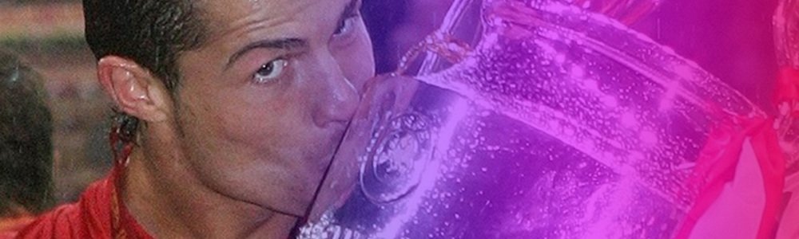

Cristiano Ronaldo es un futbolista portugués que, gracias a su mentalidad ganadora y capacidad de
esfuerzo, se ha convertido en uno de los mejores de la historia. El delantero, que en la actualidad
milita en la Juventus de Turín, jugó durante 9 temporadas con el Real Madrid, donde vivió sus
años más exitosos hasta la fecha y dejó un legado impresionante plagado de récords.
Además de destacar como líder en sus equipos, Ronaldo también ha sido la máxima referencia para su
selección desde que debutó por primera vez en el 2001, a partir de ese momento, se convirtió en un
habitual dentro de la selección portuguesa.
Hay algunos jugadores, muy pocos en realidad, que trascienden más allá de su aportación deportiva.
Futbolistas especiales, capaces de contribuir decisivamente al cambio cultural de un vestuario,
por una cuestión de pura imitación. El aprendizaje más natural del mundo es el del niño que sigue
los pasos de su padre. Y en cierto sentido, Cristiano Ronaldo es el padre de la joven generación
que ya lidera el Real Madrid. Su filosofía de esfuerzo innegable para intentar mejorar cada día,
de profesionalismo extremo en rutinas de entrenamiento, alimentación o descanso es un legado que
sigue vigente en Valdebebas, a pesar de que el portugués no vista la casaca blanca merengue desde
ya hace un lustro. Hemos podido ver como los Vinicius, Rodrygo, Camavinga y compañía, que crecieron
con el portugués como modelo a seguir, se han pasado buena parte de sus vacaciones entrenando más
y más para llegar a la pretemporada en condiciones óptimas. Y estas imágenes contrastan mucho con
lo que era el periodo entre campañas de los futbolistas no hace tanto tiempo
Desde lo profesional la huella futbolística de Cristiano en la capital es intachable,
pese a que su individualismo y su carácter choque contra lo colectivo, el éxito tanto suyo
como el del grupo es histórico. Y por tanto, el Madrid de Cristiano es una referencia para
la actual generación de futbolistas que dominan el panorama actual.
Es tan grande la influencia del luso que Kylian Mbappé imitó su presentación oficial
con el Real Madrid, a la del siete del Al-Nassr con el Madrid hace ya 15 años, y en la
rueda de prensa de ese mismo día, el francés explicaba la importancia del astro portugués
en su carrera.